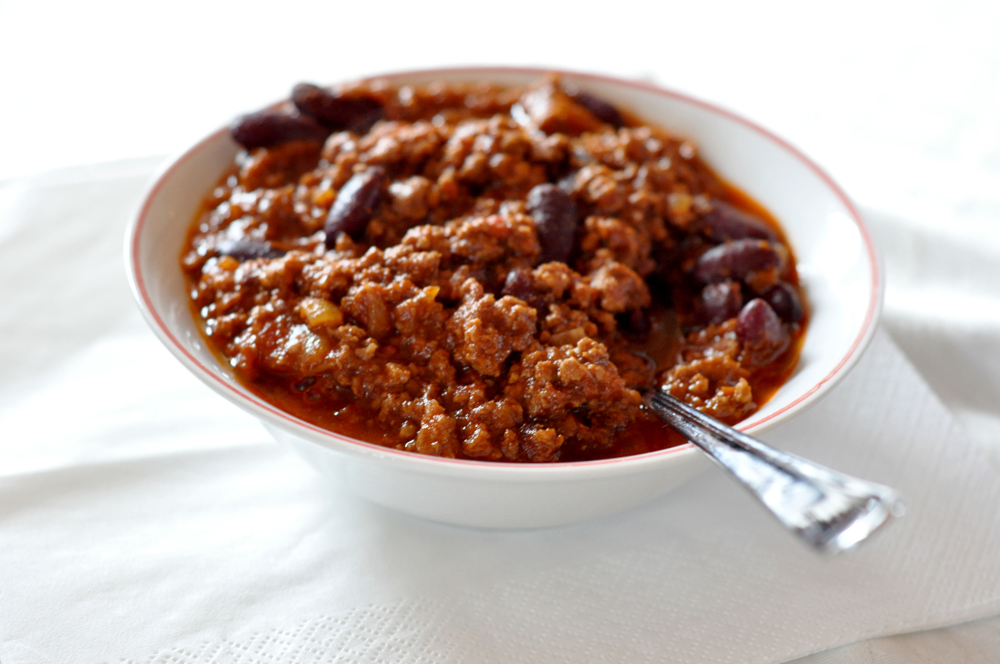

↩ Home
Classic Chili

Description
A hearty and comforting classic chili made with ground beef, three types of beans, tomatoes, peppers, and a bold spice blend—perfect for game day or a cozy night in.
Ingredients
- 1lb ground beef
- 1 yellow onion
- 1 red bell pepper
- 1 green bell pepper
- 3 jalapeños
- 1 Tbsp minced garlic
- 2 tsp cumin
- 2 Tbsp chili powder
- 1 tsp garlic powder
- 1 tsp dried oregano
- 1 tsp salt
- 1 tsp black pepper
- 1 15oz can black beans
- 1 15oz can pinto beans
- 2 15oz cans kidney beans
- 1 30oz can diced tomatoes
- 1 30oz can tomato sauce
- 1 10oz can diced tomatoes and green chiles
Instructions
- In a large skillet over medium-high heat, brown beef for about 4 minutes.
- Add diced onion, jalapeños, and bell peppers to the skillet and cook until tender.
- Add minced garlic and seasonings and cook for another 30 seconds.
- Transfer mixture to slow cooker and add drained cans of beans, diced tomatoes, and tomato sauce. Stir to combine.
- Cook on low for 8 hours or on high for 4 hours. Add salt to taste.